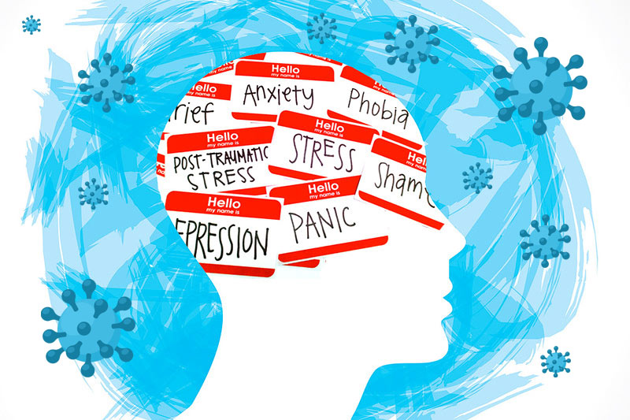

La adolescencia es una etapa muy delicada, que cualquier acto de violencia o subestimación a una persona en
este proceso puede afectar gravemente. El objetivo de esta página es conocer la importancia de la salud
mental y emocional durante la adolescencia y la transición adulto-joven, que cada uno de ustedes pueda
conocer lo delicado que puede ser un adolescente expuesto. Mas adelante estaremos observando porque es
importante la salud mental y emocional en la juventud y algunos tips que ayudaran a este problema.
¿Qué es la Salud Mental?
La salud mental incluye nuestro bienestar emocional, psicológico y social. Afecta la forma en que pensamos,
sentimos y actuamos cuando enfrentamos la vida. También ayuda a determinar cómo manejamos el estrés, nos
relacionamos con los demás y tomamos decisiones. La salud mental es importante en todas las etapas de la
vida,
desde la niñez y la adolescencia hasta la adultez y la vejez.
¿Qué es la Salud Emocional?
La salud emocional es una parte esencial de la salud. Hace referencia al bienestar psicológico de la persona,
entendiendo este bienestar como la capacidad de sentirse bien con uno mismo, de tener relaciones sociales de
calidad y de manejar las emociones, tanto positivas como negativas, de forma adecuada y adaptativa.
Características de la Salud Mental
Los factores que determinan la salud mental del adolescente en cada momento son múltiples. Cuantos más sean
los factores de riesgo a los que están expuestos los adolescentes, mayores serán los efectos que puedan
tener para su salud mental. Algunos factores que pueden contribuir al estrés durante la adolescencia son el
deseo de una mayor autonomía, la presión para amoldarse a los compañeros, la exploración de la identidad
sexual y un mayor acceso y uso de la tecnología. La influencia de los medios de comunicación y la imposición
de normas de género pueden exacerbar la discrepancia entre la realidad que vive el adolescente y sus
percepciones o aspiraciones de cara al futuro. Otros determinantes importantes de la salud mental de los
adolescentes son la calidad de su vida doméstica y las relaciones con sus compañeros. La violencia (en
particular los malos tratos y la intimidación) y los problemas socioeconómicos constituyen riesgos
reconocidos para la salud mental. Los niños y los adolescentes son especialmente vulnerables a la violencia
sexual, que tiene claros efectos perjudiciales sobre la salud mental.

Trastornos Emocionales
Los trastornos emocionales surgen habitualmente durante la adolescencia. Además de la depresión o la
ansiedad, los adolescentes con trastornos emocionales también pueden experimentar reacciones excesivas de
irritabilidad, frustración o enojo. Es posible que se superpongan los síntomas de más de un trastorno
emocional, y que se den cambios rápidos e inesperados de estado de ánimo y arrebatos emocionales. Los
adolescentes más jóvenes también pueden desarrollar síntomas físicos relacionados con su situación
emocional, como dolor de estómago, dolor de cabeza o náuseas.
Trastornos Mentales
Nos referimos a Trastornos Mentales como una amplia gama de afecciones de la salud mental, es decir,
trastornos que afectan el estado de ánimo, el pensamiento y el comportamiento. Entre los cuales estan los
siguientes:
Trastorno afectivo bipolar
Esquizofrenia
Demencia
Autismo
Ansiedad
TDAH (Trastorno por Déficit de Atención e Hiperactividad)
Estos trastornos son visibles más de un 12% de los adolescentes a nivel mundial, teniendo en cuenta la falta
de atención medica en países no desarrollados, aquellos casos al parecer no cuentan para fundaciones de
ayuda humanitaria. Pero al igual de no ser tomadas en cuenta, las personas que padecen dichos trastornos, ni
siquiera conocen de estos trastornos o que los padecen, lo cual hace más obvios sus comportamientos y vidas
sociales.
¿Como sé que tengo un trastorno mental?
Los signos y síntomas de la enfermedad mental pueden variar según el trastorno, las circunstancias y otros
factores. Los síntomas de la enfermedad mental pueden afectar las emociones, los pensamientos y las
conductas.
Sentimientos de tristeza o desánimo
Pensamientos confusos o capacidad reducida de concentración
Preocupaciones o miedos excesivos o sentimientos intensos de culpa
Altibajos y cambios radicales de humor
Alejamiento de las amistades y de las actividades
Cansancio importante, baja energía y problemas de sueño
Desconexión de la realidad (delirio), paranoia o alucinaciones
Incapacidad para afrontar los problemas o el estrés de la vida diaria
Problemas con el uso de alcohol o drogas
Cambios importantes en los hábitos alimentarios
Cambios en el deseo sexual
Exceso de enojo, hostilidad o violencia
Pensamiento suicida
¿Qué hacer ante un problema de salud mental?
¿Como detectarlo?
La manifestación de los problemas de salud mental es diferente en cada persona, aunque pueden darse una serie
de circunstancias comunes como anomalías en la forma de trasmitir los sentimientos, complicaciones a la hora
de comunicarse con su entorno (usando palabras nuevas, tartamudeando o alterando el orden de las palabras en
una frase), cambios en la conducta o anomalías en la forma de pensar y en la conciencia de la
realidad. Los problemas de salud mental son crónicos cuando la persona que los tiene encuentra
dificultades para realizar una vida totalmente independiente. En general, se habla de enfermedad mental
crónica cuando la persona recibe un diagnóstico psiquiátrico grave, cuando el problema es de larga duración
y cuando tiene problemas para funcionar de forma adecuada en su entorno.
¿Como actuar?
Ante los primeros indicios de que una persona pueda tener un problema de salud mental, los equipos de
Atención Primaria son el servicio sanitario más accesible, próximo y conocedor de la situación de la
persona. El médico de cabecera es la puerta de entrada al sistema sanitario y es el lugar a dónde deben
acudir en primer lugar las personas afectadas y sus familiares.
¿Como recuperarse de forma correcta y segura?
Los problemas de salud mental pueden controlarse con un tratamiento adecuado. Este puede ser distinto según
el tipo de enfermedad y se suelen diseñar intervenciones personalizadas para cada caso. Frecuentemente se
combina el tratamiento farmacológico con medidas de rehabilitación sociolaboral, psicoterapias y apoyo
familiar.
Tips para cuidar mi salud mental durante mi
adolescencia
La adolescencia es una etapa de transición que va de la infancia a la vida adulta marcada por cambios
físicos, emocionales y sociales que requiere una especial atención a la salud mental.
Convivencia Familiar
Limites y libertad
El respeto
Horarios y Rutinas
Las amistades en la adolescencia
Alimentacion saludable y variada
Descansar
Usar de forma adecuada las nuevas tecnologias
Practicar deportes u otras habilidades fisicas
Duerme 8 horas al dia
Buscamos ayuda en personas cercanas y de confianza